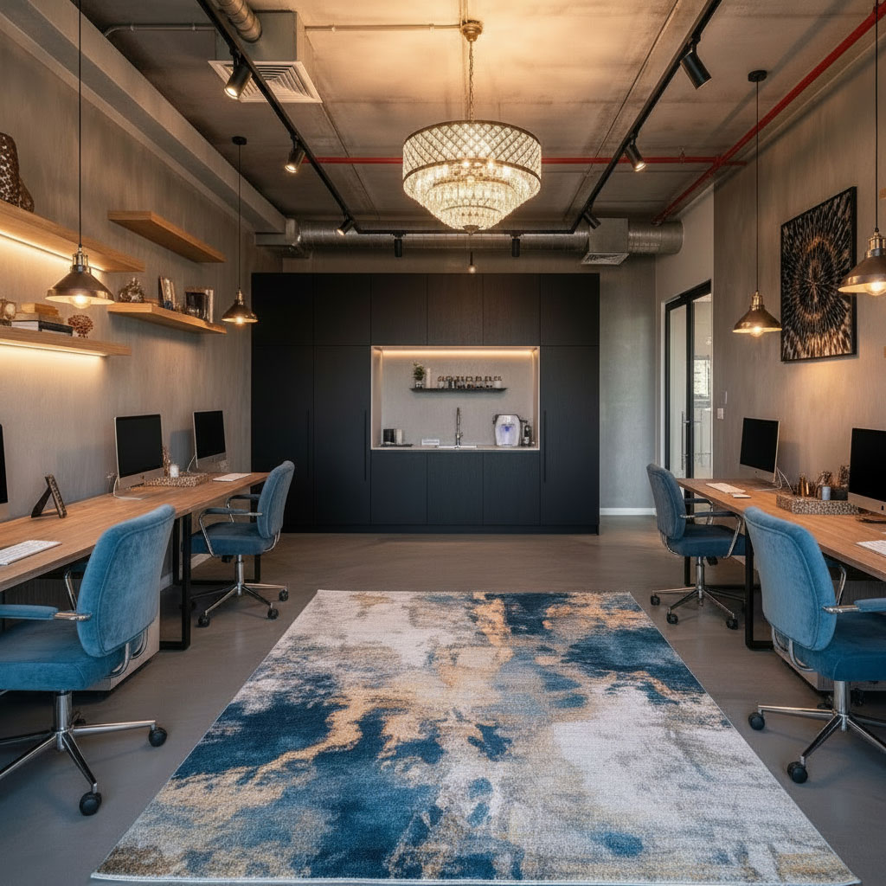
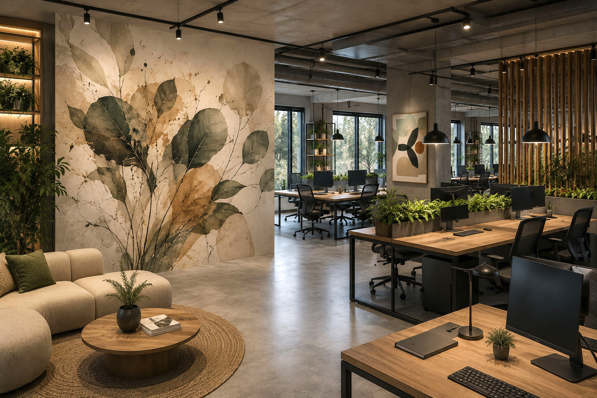

עסק שרוכש משרד לעצמו
כאן התכנון מתחיל באופן שבו העסק עובד: מספר עובדים, לקוחות, חדרי מנהלים וישיבות, פרטיות, אחסון, מטבח, תקשורת, תאורה ואפשרות לצמיחה.
פארק המדע, פארק הורביץ ואזורי העסקים ברחובות ונס ציונה. בדיקת התאמת הנכס לפני רכישה או שכירות, תכנון לעסק, למשקיע או לשוכר, ובהמשך תכנון מלא של החלל, המערכות, החומרים והריהוט.
משרד לא מתחיל בעיצוב. הוא מתחיל בהחלטה האם הנכס בכלל מתאים לעסק. כמה מהשטח באמת שימושי, כמה עובדים ניתן להכניס, האם יש מקום לחדר מנהל או חדר ישיבות, היכן נמצאות התשתיות, כמה אור טבעי נכנס ומה תהיה המשמעות של כל אלה על תקציב ההתאמה.
לפני שחותמים אפשר לבדוק האם המשרד באמת מתאים לצרכים. אני בוחנת את התוכנית ואת החלל בהתאם למספר העובדים, חדרי מנהלים וישיבות, עמדות Open Space, מטבח, אחסון, מעברים, אור טבעי, מיזוג ותשתיות קיימות.
חשוב להבחין גם בין שטח ברוטו לשטח שבו העסק משתמש בפועל. שני משרדים שמוצעים בשטח דומה יכולים לתת תוצאה תכנונית שונה לחלוטין בגלל צורת החלל, עמודים, גרעין הבניין, פתחים, חזיתות ומיקום התשתיות.
המטרה היא להבין מה באמת ניתן לעשות בנכס לפני שהחלטה כלכלית גדולה כבר התקבלה.
כאשר בוחנים רכישה של משרד או נכס מסחרי, מחיר הנכס הוא רק חלק מהתמונה. בהתאם לסוג העסקה עשויות להיות עלויות נוספות כמו מס רכישה, הצמדה למדד לפי תנאי ההסכם, שכר טרחת עורך דין, מימון וריבית, דמי ניהול, חניה, ארנונה, וכן עלויות התכנון, ההתאמות והשיפוץ.
לכן אני מסתכלת על הנכס לא רק כחלל שצריך לעצב, אלא כחלק מהחלטה רחבה יותר. כמה עבודה נדרשת כדי להתאים אותו, אילו תשתיות כבר קיימות, מה יהיה צורך לשנות ומה צפוי להישאר בנכס גם בעתיד.
מידע משפטי, מיסוי ותנאי מימון משתנים מעסקה לעסקה ויש לבדוק אותם עם עורך דין, יועץ מס, רואה חשבון או הבנק לפי העניין. הבדיקה שלי מתמקדת בהתאמה התכנונית של הנכס ובהשלכות שלה על התכנון והביצוע.
תכנון של משרד לעסק שעומד לעבוד בו שונה מתכנון נכס שנרכש להשקעה, וגם שונה ממשרד שכבר נמצא בתהליך התאמה לשוכר. לכן כדאי להבין קודם מי הולך להשתמש בחלל ולכמה זמן.
כאן התכנון מתחיל באופן שבו העסק עובד: מספר עובדים, לקוחות, חדרי מנהלים וישיבות, פרטיות, אחסון, מטבח, תקשורת, תאורה ואפשרות לצמיחה.
לפני חתימה כדאי להבין האם החלל מתאים באמת ומה יהיה היקף ההתאמות הנדרש. תכנון מוקדם יכול למנוע כניסה להסכם על משרד שלא מתאים לצרכים או דורש השקעה גבוהה מהצפוי.
לא תמיד נכון להשלים שיפוץ מלא לפני שיש שוכר. אפשר להכין תכנון עקרוני שמראה את פוטנציאל החלל ולשמור את החלוקה הסופית להתאמה למשתמש שייכנס לנכס.
כאשר יש שוכר רציני ניתן לתרגם את הדרישות שלו לתכנון מסודר, להבין אילו עבודות נדרשות, לקבל הצעות מחיר ולהתקדם לביצוע בצורה הרבה יותר ממוקדת.
זו שאלה שאין לה תשובה אחת. לעיתים נכון להשאיר משרד במצב מעטפת או במצב בסיסי עד שמגיע שוכר וידוע כיצד הוא צריך לעבוד בחלל. חברת הייטק, משרד עורכי דין, קליניקה וחברת שירותים עשויים להזדקק לחלוקה שונה לחלוטין.
מצד שני, גם אם עדיין לא רוצים לבצע את כל השיפוץ, אפשר להכין תוכנית העמדה והדמיות שממחישות מה ניתן לעשות בנכס. כך שוכר פוטנציאלי אינו צריך לדמיין בעצמו איך חלל ריק יכול להפוך למשרד פעיל.
כאשר כבר נמצא שוכר שרוצה להתקדם, ניתן לתכנן את המשרד בהתאם למספר העובדים, אופי הפעילות, חדרי העבודה, חדר הישיבות, המטבח, האחסון והתשתיות.
לאחר גיבוש התכנון ניתן להגדיר בצורה ברורה יותר אילו עבודות נדרשות, לקבל הצעות מחיר מבעלי מקצוע ולהחליט מה מבוצע על ידי בעל הנכס ומה נדרש לצורך ההתאמה הספציפית לשוכר.
מבחינה תכנונית אני מחפשת את נקודת האיזון בין הצרכים של השוכר היום לבין השקעה איכותית שתמשיך להיות נכונה לבעל הנכס גם בעתיד.
אחרי שהמחיצות עומדות, הריצוף בוצע ונקודות החשמל והתאורה כבר במקומן, כל שינוי הופך מורכב ויקר יותר.
במעטפת אפשר לחשוב על התמונה השלמה: מי עובד איפה, מה רואים בכניסה, היכן נדרשת פרטיות, איפה עוברת התקשורת, מה התאורה צריכה להאיר, והיכן המטבח והנגרות משתלבים נכון בחלל.
התכנון מתחיל באנשים ובאופן שבו העסק עובד. מספר עובדים, קבלת קהל, חדרי ישיבות, שיחות פרטיות, אחסון, מדפסות, מעברים ואפשרות לצמיחה.
גם משרד קטן יכול להרגיש מרווח ומסודר כאשר כל מטר מתוכנן נכון.
חלון גדול לא מבטיח משרד מואר. כיוון החזית, עומק החלל, מחיצות ובניין סמוך יכולים לשנות את תנאי האור.
אני מתכננת תאורה כללית, תאורת עבודה ותאורה דקורטיבית מתוך ההעמדה והאווירה הרצויה, ולא כנקודות מקריות בתקרה.
שקעים, נקודות רשת, Wi-Fi, מסכים, טעינה, מדפסות וחדר ישיבות צריכים להגיע מתוך ההעמדה. כך נמנעים מכבלים, מפצלים ונקודות שנמצאות במקום הלא נכון.
משרד נעים צריך לאפשר גם ריכוז וגם שיחה. חומרים, מחיצות, תקרה, טקסטיל ופתרונות אקוסטיים מתוכננים לפי הצורך.
אפשר לשלב גם מערכת שמע ומוזיקת רקע כחלק מהאווירה במשרד.
ריצוף, צבע, זכוכית, עץ, אבן, חיפויי קיר וטקסטיל נבחרים כשפה אחת כדי שהמשרד לא יהפוך לאוסף של החלטות שאינן מתחברות זו לזו.
מטבח משרדי צריך להתאים למספר המשתמשים, לציוד, לאחסון ולתשתיות. נגרות מתוכננת יכולה לפתור אחסון, להסתיר מערכות וליצור קיר משמעותי שמעניק למשרד זהות.
בחירת שולחנות, כיסאות, אזורי המתנה וחדרי ישיבות מגיעה מתוך מידות החלל והמעברים.
הליווי כולל לפי הצורך ימי בחירות, ספקים ורכישות כחלק מהתמונה הכוללת.
אמנות, קירות מעוצבים, צמחייה, טקסטיל ותאורה דקורטיבית הם לא רק שכבה שמוסיפים בסוף.
אפשר לפתח אותם מתוך הזהות של העסק ולתכנן אותם כחלק מהחלל עצמו.
גם במשרד שאין בו קבלת קהל, האווירה חשובה. העובדים נמצאים בחלל שעות רבות בכל יום, ולכן צבע, תאורה, חומריות, נוחות ואור משפיעים על חוויית העבודה. קודם פותרים את הפונקציה, ורק אחר כך בונים עליה את השפה העיצובית.


לא בכל פרויקט צריך לבחור טפט או תמונה מוכנים. לפעמים אני לוקחת אלמנטים מתוך העולם של העסק, מפרקת, מגדילה ומחברת אותם ליצירה חדשה שמתוכננת במיוחד לקיר ולפרופורציות של החלל.
היצירה יכולה להמשיך למחיצת זכוכית, תאורה, מראה או אלמנט תלת ממדי וכך להפוך לחלק מהאדריכלות ולא לקישוט שנוסף בסוף.

קיר דומיננטי יכול לייצר את השפה של המשרד כולו, כאשר התאורה והאלמנטים בחלל ממשיכים את הקומפוזיציה.

חלקים מכניים, שרטוטים, חומרים או פרטים מתוך תחום הפעילות יכולים להפוך לאמנות שמספרת את סיפור החברה בלי להפוך את המשרד לשלט פרסומת.

אלמנט בוטני שמוגדל לקנה מידה אדריכלי יכול להכניס צבע וחיים ולהפוך קיר שלם לנקודת מוקד.

הצבעוניות והחומריות של היצירה חוזרות בריהוט ובפרטים, כך שהחלל מרגיש מחובר ולא אוסף של פריטים.
עוד על הדרך שבה אני יוצרת אמנות כחלק מהחלל: אומנות ייחודית לבית, למשרד ולעסק .
כדאי לבדוק את כיוון החזית והאור הטבעי, מה רואים מהחלונות, מה עשוי להיבנות בסביבה, חניה ונגישות, שטחים משותפים, אופי הבניין, דמי הניהול ומערכות הבניין.
גם בתכנון הפנים כדאי לחשוב קדימה: האם אפשר להוסיף עמדת עבודה, לשנות מחיצה, להרחיב חדר ישיבות או להתאים את המשרד לעסק אחר בעתיד. תכנון גמיש מאפשר לנכס להמשיך לעבוד גם כשהצרכים משתנים.
בפרויקט ברחובות אפשר לראות כיצד אזור עבודה משתלב בחלל כולו, וכיצד נגרות, עץ, אמנות ותאורה מתוכננים יחד ולא כאוסף של החלטות נפרדות.


לפרויקט המלא: דירה ומשרד ברחובות . לקריאה נוספת: תכנון ועיצוב משרד ביתי .
אפיון צרכים וקונספט | חלוקת החלל והעמדת ריהוט | תוכנית הריסה ובנייה לפי הצורך | פריסת ריצוף | תוכניות חשמל ותקשורת | תוכנית תאורה | אינסטלציה | תכנון מטבח | תכנון נגרות | בחירת חומרי גמר וחיפויים | בחירת ריהוט וגופי תאורה | אקוסטיקה וסאונד לפי הצורך | אמנות והלבשת החלל | ימי קניות ובחירות | פגישות עם ספקים ובעלי מקצוע | קבלת הצעות מחיר לפי הצורך | ביקורים בשטח | ליווי תכנוני במהלך הביצוע.
אפשר לראות באתר דוגמאות לפרויקטים שבהם החלל, החומרים, הנגרות, התאורה והפרטים עובדים יחד.

תכנון ועיצוב משרד מסחרי, אזור קבלה, חדר ישיבות, משרד מנהל, מטבחון ונגרות.

חלל עבודה יצירתי שבו פונקציונליות, צבע, ריהוט ואופי הופכים לחלק מהזהות של העסק.
לא ניתן לדעת לפי מספר המטרים בלבד. צורת החלל, פתחים, עמודים, מיקום התשתיות, חדרים סגורים ומעברים משפיעים מאוד על מספר העמדות שניתן לתכנן בצורה נוחה.
ברכישת משרד חשוב להבין מהו השטח הרשום או המשווק ומהו השטח שניתן בפועל לנצל בתוך המשרד. היחס משתנה בין פרויקטים ומבנים ולכן כדאי לבדוק את התוכנית עצמה ולא להסתמך רק על המספר בפרסום.
לא תמיד. לעיתים כדאי לבצע תשתיות או בסיס איכותי ולהשאיר את החלוקה הסופית עד שיודעים מי השוכר ומהם הצרכים שלו. אפשר גם להכין תכנון והדמיות שממחישים את פוטנציאל הנכס עוד לפני השיפוץ.
כן. ניתן לבחון את התוכנית, את מספר העובדים והחדרים הנדרשים, את מיקום התשתיות, האור והאפשרויות התכנוניות כדי להבין טוב יותר אם הנכס מתאים לעסק.
את ההיבטים המשפטיים בודקים עם עורך דין, את המיסוי עם איש המקצוע המתאים ואת המימון מול הבנק או יועץ מימון. אני מסתכלת על התמונה מתוך הצד התכנוני כדי להבין כיצד הנכס וההשקעה בו מתחברים לצרכים האמיתיים של העסק.
לא חייבים לחכות לקבלת המפתח. אפשר להתחיל כבר בשלב שבו בוחנים את הנכס, להבין מה ניתן לעשות בו ולהתקדם לתכנון מלא כאשר מתקבלת ההחלטה.
לתיאום שיחה